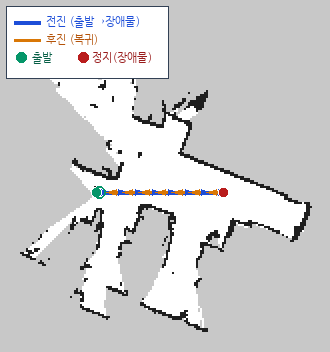

장애물까지 전진 → 복귀 한 번으로 만든 테스트 맵. 센서 상태, 그림 읽는 법, 다른 지점에서 이어서 그릴 수 있는지.
잘 동작했습니다. 카메라·라이다·오돔이 같이 들어왔고, 왕복 한 번으로 네모난 방과 복도 윤곽이 격자에 남았습니다.
| 확인한 것 | 결과 |
|---|---|
| 라이다가 앞을 재나 | 출발 때 앞 1.07 m. 0.39 m에서 정지 (설정 0.40 m) |
| 앞으로 얼마나 갔나 | 3.17 m 후 장애물 정지 |
| 돌아왔나 | 출발점에서 8 cm |
| 카메라가 맵에 남겼나 | 키프레임 53장 |
| 2D 격자 | 빈 칸 6552 · 벽 1211 · 칸 크기 5 cm |

파랑 화살표 = 전진(출발→장애물) · 주황 = 후진 복귀 · 초록 점 = 출발 · 빨간 점 = 정지
지나갈 수 있음(레이저가 통과) 막힘(벽·가구·장애물) 아직 안 봄
/map은 사진이 아니라, 위에서 내려다본 5 cm 칸 모음입니다. 이번 장은 165×176칸(약 8.3 m × 8.8 m 종이)입니다. 그중 하양·검정만 “이번에 본 것”입니다.
| 입력 | 역할 |
|---|---|
| 로봇 위치 (x, y, 각도) | 광선을 어디서 쏠지. 오돔 + 라이다 맞춤 + 카메라로 고친 자세 |
라이다 /scan | 각 방향으로 몇 미터에서 맞았는지. 흰/검은 칠의 재료 |
| 라이다 장착 위치 | 차체보다 4.35 cm 앞, 11 cm 위 |
| 가까운 점 버림 | 0.2 m 안은 자기 몸으로 보고 칠하지 않음 |
카메라 RGB는 “여기를 전에 봤다”를 맞춰 위치를 붙잡는 데 씁니다. 격자 색깔 자체는 라이다 광선이 칠합니다.
| 보는 곳 | 알게 되는 것 |
|---|---|
| 회색 | 이번 왕복의 레이저가 안 닿은 곳. 집이 없는 것이 아니라 미탐사지 |
| 하양 통로·네모 | 바닥이 비어 있다고 확인한 복도와 방 |
| 하양을 두른 검정 선 | 벽·가구. 빨간 점 근처가 3.17 m에서 멈춘 장애물 |
| 파랑/주황 선 | 차가 실제로 간 왕복 궤적 |
이미 그린 공간과 겹치는 곳에서 시작하면 이어서 그릴 수 있습니다. 바탕화면 R2 매핑 이어서가 그 모드입니다. 기존 DB를 지우지 않고 노드를 덧붙입니다.
새 센서 그림과 예전에 저장한 장면을 비교해 “지금 맵의 어디인가”를 찾는 알고리즘이 있습니다. RTAB-Map의 위치 인식(루프 클로저 / localization)입니다.
| 시작 방법 | 결과 |
|---|---|
| 이전에 그린 복도에서, 조금 옆이나 조금 돌아서 시작 | 장면을 알아보면 이어서 칠함 |
| 전혀 안 가본 방, 또는 맵과 안 겹치는 곳 | 위치를 못 찾아 맵이 어긋날 수 있음. 먼저 겹치는 곳으로 이동 |
| 순찰용 위치만 찾기 | Mem/IncrementalMemory=false — 맵은 안 바꾸고 좌표만 찾음 |
매핑을 켤 때 따로 캘리브레이션 프로그램을 돌리지는 않습니다. 아래 값이 이미 들어가 있습니다.
| 대상 | 값 |
|---|---|
| 카메라 내부변수 | Astra가 주는 camera_info. fx=fy=546.1, 해상도 640×480 |
| 라이다 위치 | 앞으로 4.35 cm, 위로 11 cm |
| IMU | Madgwick(지자계 끔) + EKF에서 yaw만 |
| 바퀴 스케일 | 1.0 (추가 보정 스크립트는 수동) |
| 조향 중립 | 보드 기본각 약 100. 소프트웨어 0도 = 이 각 |
| 색·깊이 동기 | 10 ms 이내만 한 쌍으로 사용 |
| 격자에서 몸체 제외 | 0.2 m 안 스캔은 칠하지 않음 |